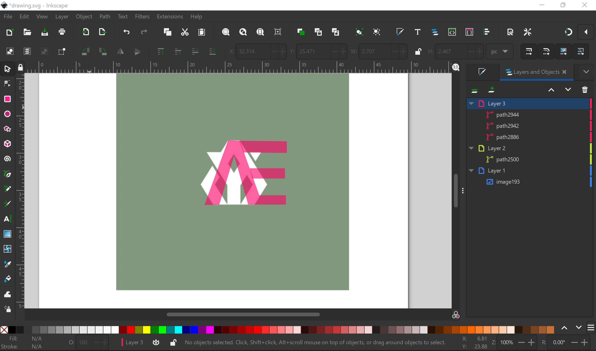
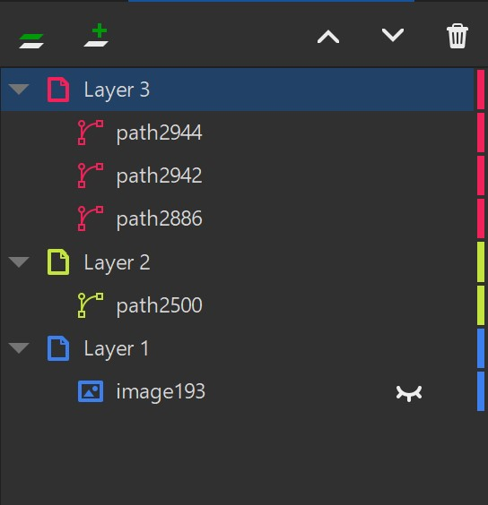
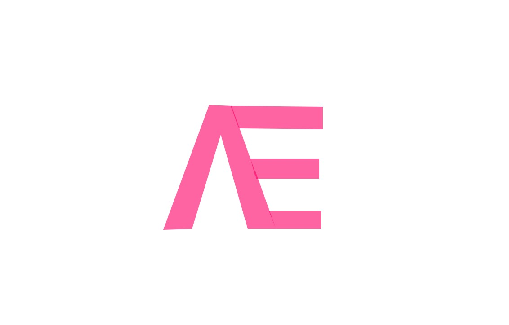
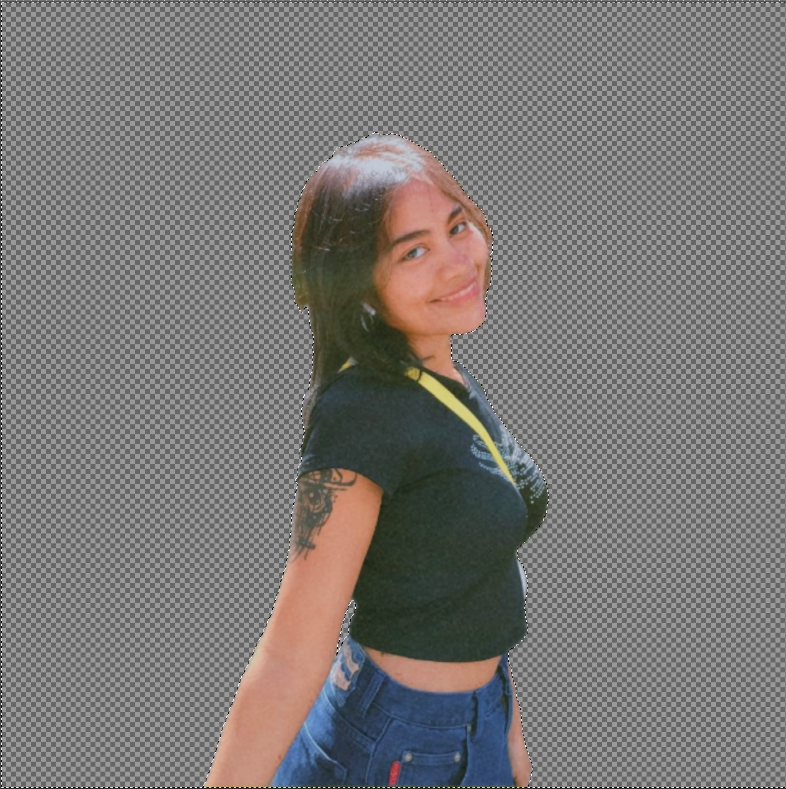
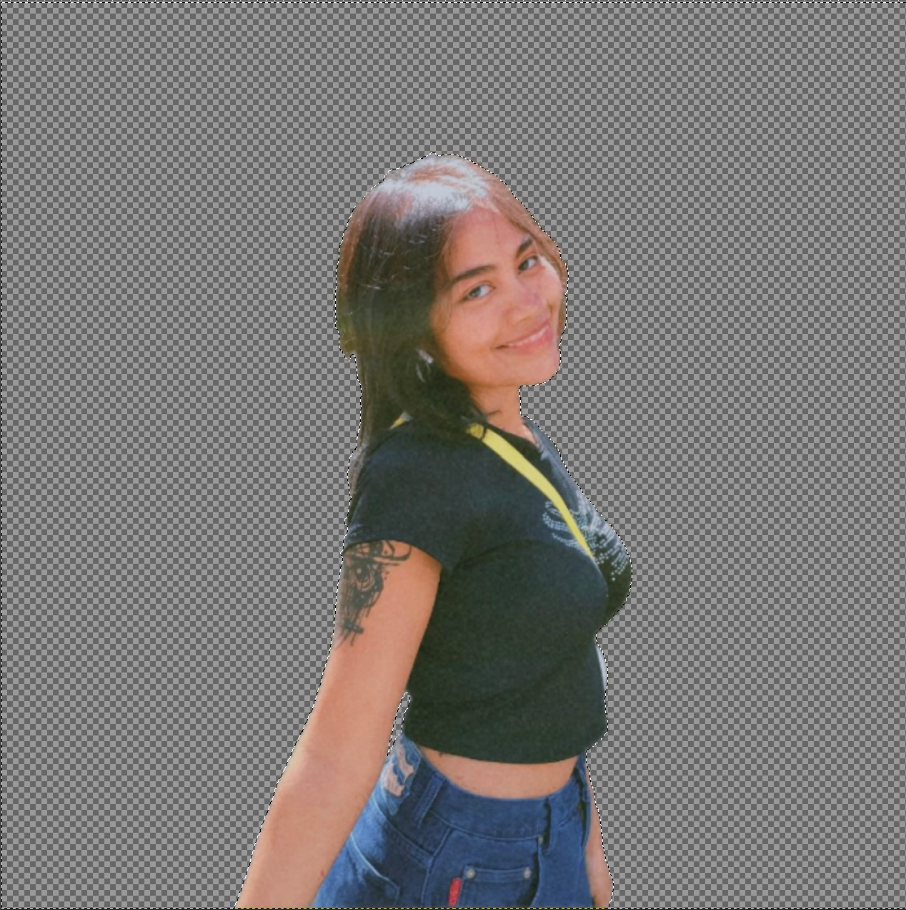

Vector Graphics using Inkscape



Next, I had to create a personal design inital using Inkscape. First, I looked for a design inspiration and found one that I liked. I wanted to replicate the shape of the A as the primary focus of my logo. I had previously wanted to layer a capital E beneath the A, like the logo inspiration. However, the E would not be as upfront as I preferred. I decided to place the E next to the A, resulting in the final logo. I had to place the inspiration logo as layer 1, reducing it's opacity. On layer 2, I traced the A of the reference logo but decided to alter the width of it. On the third layer, I added in the E and my logo was made.
 
